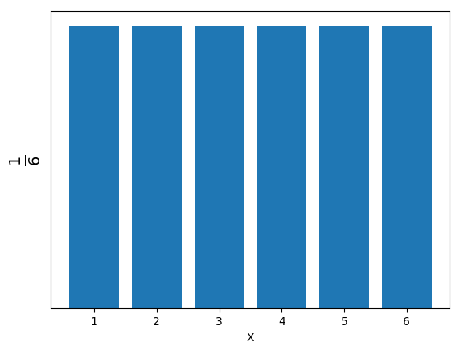
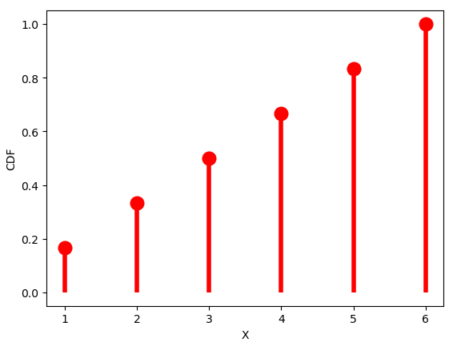

A random variable is a variable whose possible values are the generated outcomes of a random phenomenon. In other words, a random variable is a function that can assign probabilities to events of interest in a random experiment.
import numpy as np
B = np.random.randn(4,3)
print('An example of a random matrix is:')
print(B)The output of this random variable looks as follows:
An example of a random matrix is:
[[-0.34746929 0.90072387 1.10052698]
[-1.95086028 -1.32774413 0.89592821]
[-0.33078607 2.11410478 -0.12062541]
[-0.44410502 0.54852488 1.3069914 ]]
from scipy import stats
import matplotlib.pyplot as plt
xk = np.arange(1, 7)
pk = (1/6, 1/6,1/6, 1/6, 1/6, 1/6) # probabilities must sum to 1
plt.subplots(1, 1)
plt.bar(xk, pk)
plt.ylabel(r'$\frac{1}{6}$',fontsize=20)
plt.yticks([])
plt.xlabel("X")The output of this random variable looks as follows:

custm = stats.rv_discrete(values=(xk, pk))
fig, ax = plt.subplots(1, 1)
ax.plot(xk, custm.cdf(xk), 'ro', ms=12, mec='r')
ax.vlines(xk, 0, custm.cdf(xk), colors='r', lw=4)
plt.ylabel("CDF")
plt.xlabel("X")
plt.show()The output of CDF looks as follows:
